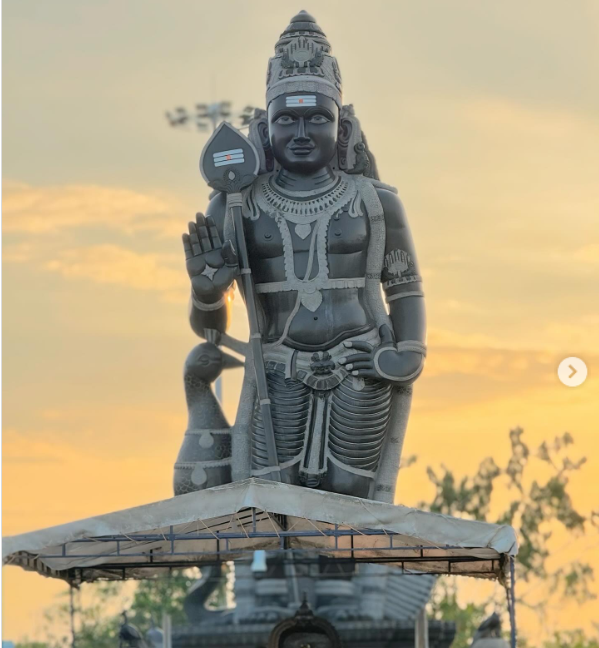

The 40 Feet Murugan Statue carved in monolithic stone is considered to be the tallest in India. This tallest Monolithic Murugan is situated on a shatkona hillock (star-shaped pedestal) with a meditation hall below the shatkonam. The whole temple complex is designed in the shape of an “Om”
